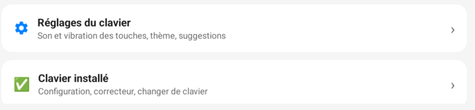
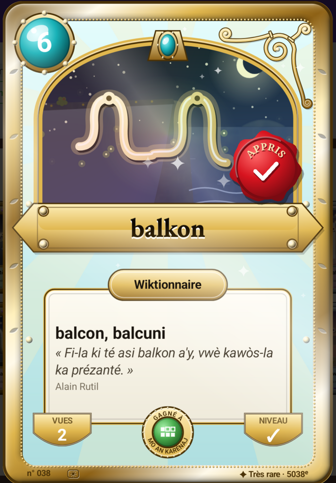
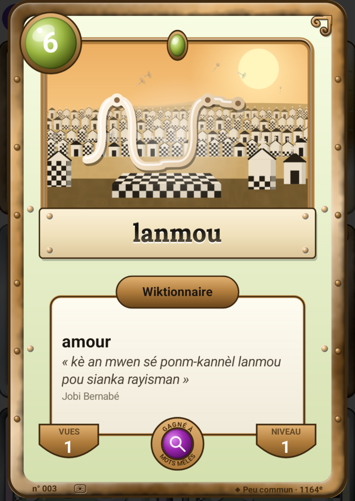

Couper le son des touches, et voir voler les lucioles
Deux nouveautés ce mois-ci : le son et la vibration des touches se coupent plus facilement, et des lucioles volent sur les cartes du jeu. Voici ce que c'est, et où le trouver.
Couper le son et la vibration des touches
Cet avis a été laissé sur le Play Store :
« Bonne appli mais est-il possible d'enlever le son & vibrations du clavier ? »
C'était possible, mais le réglage était caché derrière une petite roue dentée, en haut de l'écran. Il a maintenant sa propre ligne, bien visible, sur la première page de l'application.

Ouvrez l'application Klavyé Kréyòl. Sur la première page (l'onglet Dékolaj), touchez « Réglages du clavier », juste au-dessus de « Clavier installé ». Vous y choisissez le son et la vibration des touches, mais aussi le thème clair ou sombre et les suggestions.
Bon à savoir : ce réglage se fait dans l'application Klavyé Kréyòl, pas dans les réglages du téléphone.
Mèsi pour cet avis : c'est en lisant vos avis que l'application avance.
Vos mots deviennent des cartes
En plus du clavier, l'application propose de petits jeux de mots en kréyòl : mots mêlés, mots croisés, phrases à trous. Chaque mot que vous trouvez devient une carte, comme une carte à collectionner. Elle porte le mot, son sens en français, une phrase d'un auteur où il apparaît, et un paysage de Guadeloupe.
Dans l'application, touchez l'onglet Jé pour jouer. Vos cartes sont rangées dans Sanblé : touchez « Ouvrir » sur le bandeau en haut de l'onglet Jé, puis touchez une carte pour l'ouvrir en grand.
Des lucioles dans la nuit des forêts
Le paysage d'une carte n'est pas pris à n'importe quelle heure : le matin pour un mot courant, le soir ou la nuit pour un mot rare. Quand ce paysage est une forêt, comme La Soufrière ou Matouba, des lucioles volent maintenant au-dessus des arbres. Leur petite lumière s'allume et s'éteint doucement, chacune à son rythme, même sous la pluie.
En kréyòl, la luciole se dit klendenden, et un auteur l'a écrit ainsi :
« Klendenden limé dé ti klou an tèt a-y »
On lannuit Gwadloup

Un ciel étoilé, et Morne-à-l'Eau redessiné
Sur une carte de nuit, les étoiles scintillent. Penchez doucement le téléphone : le paysage bouge un peu, comme si vous regardiez par une fenêtre.
Le cimetière de Morne-à-l'Eau a été redessiné d'après photo, avec ses caveaux blancs au damier noir et blanc, et des bougies qui s'allument le soir.


Le clavier en trois gestes
- Touchez un mot proposé dans la barre au-dessus des lettres : il s'écrit en entier.
- Appuyez longtemps sur une lettre pour trouver ses accents : sur le e pour é, è, ê, sur le o pour ò.
- Glissez le doigt sur la barre d'espace vers la gauche ou la droite pour déplacer le curseur dans votre texte.
An kréyòl nou ka palé, an kréyòl nou ka maké.
Installer sur Google PlayCes nouveautés sont déjà dans la dernière version publiée sur GitHub, en attendant leur arrivée sur le Play Store. Toutes les autres sont sur la page Nouveautés.